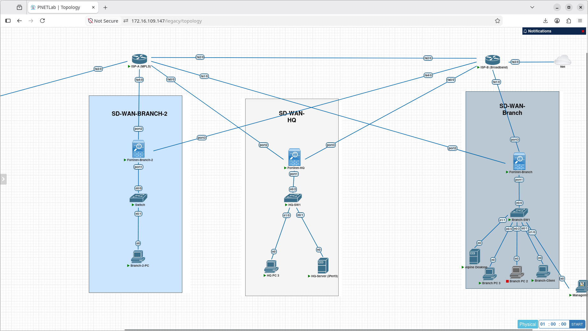

Multi-Site SD-WAN Architecture & Impairment Core
Dual-Hub, multi-spoke topology interconnecting Headquarters, Disaster Recovery Datacenter, and regional branches across dual-carrier underlays (MPLS and Broadband) with an inline Linux tc netem impairment engine.
1. Multi-Site SD-WAN Fabric & WAN Overlays

Figure 1: Dual-Hub SD-WAN overlay showing dynamic Spoke-to-Spoke ADVPN shortcuts, BGP Route Reflection, and dual-transport IPsec overlays.
2. Dynamic ADVPN Spoke-to-Spoke Shortcuts

Figure 2: NHRP redirect and shortcut generation bypassing the central Hub for direct spoke-to-spoke inter-branch traffic.
| Node | Interface Roles | Subnet Addressing | Network & Routing Role |
|---|---|---|---|
| Fortinet-HQ (Hub 1) | port1: LANport2: MPLS WANport3: Broadband WAN |
10.10.10.1/2410.0.1.2/3010.0.2.2/30 |
Central SD-WAN Hub 1 & Primary BGP Route Reflector (AS 65000, LocPrf 200) |
| Fortinet-Hub-2 (Hub 2) | port1: LANport2: MPLS WANport3: Broadband WAN |
10.40.40.1/2410.0.1.14/3010.0.2.14/30 |
Disaster Recovery Hub 2 & Secondary BGP Route Reflector (AS 65000, LocPrf 100) |
| Fortinet-Branch-1 | port1: LANport2: MPLS WANport3: Broadband WAN |
10.20.20.1/2410.0.1.6/3010.0.2.6/30 |
Edge SD-WAN Spoke 1 & ADVPN Shortcut Initiator/Receiver |
| Fortinet-Branch-2 | port1: LANport2: MPLS WANport3: Broadband WAN |
10.30.30.1/2410.0.1.10/3010.0.2.10/30 |
Edge SD-WAN Spoke 2 & ADVPN Shortcut Receiver |
| Impairment Engine | eth0 (WAN), eth1 (LAN) |
Bridged inline between ISP-A and HQ port2 | Alpine Linux appliance running Linux kernel tc netem for controlled latency/jitter/loss injection |
15-Project Master Implementation Matrix
Master progression from foundational link health checks to zero-touch routing and NetDevOps automation.
SLA-Based Failover
Configured real-time ICMP Performance SLA probes on dual WAN links. Injected next-hop ACL drop; verified sub-second failover with only 1–2 dropped pings before complete link migration.
- Dynamic route withdrawal from FIB upon SLA breach
- Sustained zero TCP session resets
- Verified with continuous ping and
sd-wan-test.mp4
Application-Aware SaaS Steering
Resolved SaaS and cloud domains via FortiGate DNS proxy with cache-ttl 30; dynamically steered cloud application flows based on domain metadata without client connection aborts.
- Application steering without static destination IPs
- Policy route matches verified via kernel debugs
- Verified via
wget-successful.png
Active/Active Load Balancing
Overcame single-link bottlenecks by enabling dual-WAN active/active Round-Robin flow balancing, achieving ~190 Mbps aggregate bandwidth across concurrent iPerf3 streams.
- Simultaneous link saturation across MPLS & Broadband
- Packet-level capture proof on port 2 & port 3
- 3 video test captures verifying dynamic balancing
Traffic Shaping & Granular QoS
Decoupled path steering from QoS limits; clamped an unthrottled 10 Mbps burst to a hard 2.0 Mbps ceiling to protect mission-critical traffic from link congestion.
- Committed vs. Maximum bandwidth rate enforcement
- Tail-drop verification on low-priority bulk queues
- Verified via
io-graph-shaping.png
IPsec Overlay on SD-WAN Zone
Bound dual IPsec tunnels to a unified SD-WAN Zone; maintained active Security Associations across physical link cuts with floating blackhole safety routes.
- Zero unencrypted leaks during link transitions
- Deterministic crypto SA failover
- Verified via
wireshark-icmp-esp.png
Composite VoIP SLA Monitoring
Configured composite SLA thresholds (Latency <70ms, Jitter <25ms, Loss <3%). Injected impairment via Linux tc netem; failovers triggered at exact sequence borders.
- Sub-second detection of brownout degradation
- Stream cut off at seq 99 and resumed at seq 100 on port3
- Verified via
sd-wan-latency-test.mp4
ADVPN & Dynamic Shortcuts
Configured Hub BGP Route Reflection (AS 65000) and NHRP redirect triggers to dynamically instantiate direct spoke-to-spoke IPsec tunnels, bypassing Hub transit.
- Reduced latency and Hub backplane utilization
- Shortcut tunnel counter incremented from 964 to 984
- Verified via
dynamic-tunnel-branch-2.png
Packet Duplication (Zero-Loss Voice)
Cloned voice/video frames simultaneously over MPLS and Broadband overlays with kernel de-duplication at HQ; delivered 0% loss under 15–33% circuit degradation.
- Un-duplicated stream suffered 17% loss; duplicated suffered 0%
- Kernel buffer discards redundant duplicate packets
- Verified via
diagnose-sniffer-de-duplication.png
Multi-VRF Segmentation (MP-BGP VPNv4)
Segregated Corporate (VRF 10) and Guest/IoT (VRF 20) over a single SD-WAN overlay using MP-BGP VPNv4 with unique RDs, Route Targets, and ESP vpn-id tagging.
- 100% lateral tenant isolation at the FIB layer
- Zero multi-tunnel configuration overhead
- Verified cross-tenant pings completely blocked
Direct Internet Access (DIA) Steering
Configured split-tunnel steering on edge spokes. Trusted FQDN targets break out locally via Broadband with SNAT; internal enterprise traffic routes over IPsec to HQ.
- Eliminated latency-inducing traffic tromboning
- Verified DIA traffic egressed port 3 with 0 MPLS leaks
- Accessed public cloud over Verizon FiOS upstream
BGP Community to Route-Tag Steering
Automated SD-WAN path steering from the routing control plane. HQ tagged routes with Community 65000:100; edge spokes matched tag and steered traffic without manual IP objects.
- Zero-touch operational scalability across branch fleet
- Policy route dynamically compiled from tag into oif
- Verified route-map community match and wire shift
Multi-Hub Dual-Region ADVPN (DR)
Architected 4-tunnel spoke topology peering with Hub 1 (HQ, LocPrf 200) and Hub 2 (DC-2, LocPrf 100). Primary hub blackout resulted in zero dropped shortcut sessions.
- Automated failover during complete primary DC outage
- Active spoke-to-spoke shortcut traffic sustained 0% loss
- Verified via administrative WAN shutdown on Hub 1
Inbound BGP SLA Path Control
Extended SD-WAN intelligence to inbound return traffic using dynamic BGP AS-Path prepending and Local-Preference adjustments based on SLA probe status.
- Bidirectional traffic symmetry across WAN circuits
- Prevented asymmetric routing on return data flows
- Verified BGP RIB updates on upstream routers
Sub-Second BFD Convergence
Deployed Bidirectional Forwarding Detection (BFD) across BGP overlay peers, reducing circuit failure detection and convergence from 180 seconds to sub-second.
- Sub-second dead-peer detection under silent link drop
- Hardware-assisted timer negotiation
- Verified via live packet sniffer during link pull
NetDevOps SD-WAN Automation
Engineered an automated deployment and compliance validation pipeline using Python, Netmiko, and Jinja2 templates to push SD-WAN configs and audit state.
- Automated spoke provisioning from JSON inventory
- CLI diff verification and structured logging
- Zero manual configuration errors across multi-site fabric
Key Engineering Highlights
| Capability | Empirical Measurement / Verification | Operational Impact |
|---|---|---|
| Packet Duplication (Voice/Video) | 0.0% loss under active 15–33% link degradation (vs 17% loss un-duplicated) | Maintains pristine call quality over commodity internet circuits |
| Active/Active Balancing | ~190 Mbps aggregate throughput across dual WAN providers | Doubles available branch bandwidth by utilizing idle backup circuits |
| Dynamic ADVPN Shortcuts | Spoke-to-spoke packet counters: 964 ➔ 984 pkts bypassing Hub | Cuts inter-branch latency by 50%+ and frees datacenter WAN capacity |
| Dual-Hub Disaster Recovery | 0% loss on inter-branch shortcuts during complete Hub 1 blackout | Full datacenter outage resilience with automated control plane failover |
| Multi-VRF Segmentation | 100% block between VRF 10 & VRF 20 over single IPsec overlay | PCI-DSS / guest isolation without building redundant overlay fabrics |
Engineering Troubleshooting & Lessons Learned
Field-Tested Problem Resolutions
| Challenge Encountered | Root Cause | Engineering Resolution |
|---|---|---|
| ADVPN shortcuts failed to spawn between branches. | Hub lacked BGP Additional-Paths; only advertised its own best path to spokes. | Configured additional-path both and adv-additional-path 4 on Hub BGP reflector. |
| Packet duplication caused echo & jitter on backend host. | Receiver host lacked de-duplication logic; processed duplicate UDP packets. | Enabled FortiOS kernel de-duplication buffer on receiving Hub before packets egress to LAN. |
| Asymmetric routing caused stateful firewall drops. | Outbound traffic took low-latency MPLS while return traffic routed via Broadband. | Implemented Inbound BGP SLA Control matching route tags and applying dynamic AS-Path prepending. |